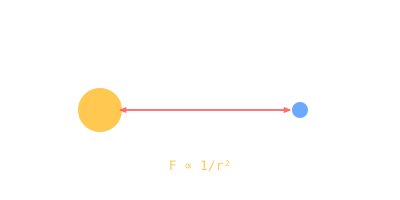

Newton's Principia · 1687
One book, three laws of motion, and the inverse-square law of gravity — the foundation everything spaceflight does still rests on.

101 · zoom in
By 1684 Halley was asking the right people what shape an orbit would take if the Sun's pull went as 1/r². Christopher Wren wagered a book of forty shillings that no-one could prove it; Hooke claimed a proof he didn't have. Halley asked Newton — Newton said "an ellipse" without hesitation, dug up the proof from years-old notes, and three years later published the Principia.
Three laws of motion (inertia, F = ma, action-reaction) plus the inverse-square gravity law (F = Gm₁m₂/r²) plus the calculus to do it all — one book, three years, no peer review. Halley paid the printing costs himself when the Royal Society ran out of money on a fish-anatomy book.
Out of those equations: Kepler's three laws derive cleanly. Tides, projectile motion, the precession of the equinoxes, the shape of the Earth — all consequences. Spaceflight 280 years later is straightforward Newtonian mechanics with engines added.
Philosophiæ Naturalis Principia Mathematica was published July 1687 in Latin. Three books: motion in a vacuum, motion through resisting media, the system of the world. The third book applies the laws to the actual cosmos and reproduces all of Kepler's data from first principles.
Calculus was Newton's invention specifically to do this. He called it "fluxions" — Leibniz independently invented essentially the same machinery in Germany around the same time, and the rivalry over priority lasted decades.
What Newton DIDN'T explain: WHY gravity follows 1/r². His own famous comment: "Hypotheses non fingo" — "I feign no hypotheses." The mechanism would wait for Einstein in 1915.
Modern numerical orbit propagators run essentially Newton's equations with floating-point arithmetic. /fly's heliocentric arc, /plan's porkchop, every Keplerian solution — Newtonian gravity all the way down.
SEE IN THE APP
- /fly Every spacecraft trajectory is a Newtonian solution to a gravity problem